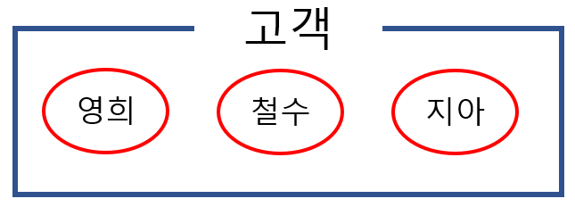
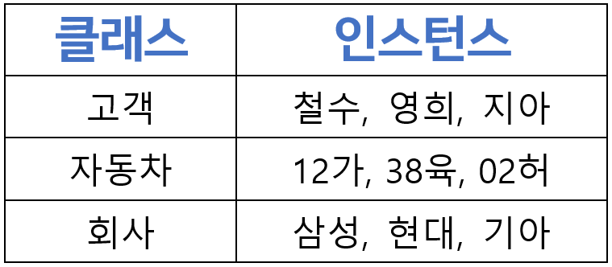

용어정리
클래스(class)와 오브젝트(object)와 인스턴스(instance)
인스턴스의 사전적 정의는 사례, 경우라는 명사입니다.
이러한 뜻을 가지고 있는 인스턴스는 실제 시스템에서 클래스의 구체적인 사례가 됩니다.
클래스는 일종의 설계도입니다. 설계도 자체로는 할 수 있는 일이 많지 않습니다. 설계도를 구체적인 제품으로 만들어야합니다.
설계도인 클래스를 가지고 구체적으로 나타낸 각각의 오브젝트를 인스턴스라고 합니다.

예를 들어 가은행에 철수, 영희, 지아 고객이 있습니다.
구현하려는 클래스 안에 있는 고객이 철수, 영희 지아 이렇게 세 명이라면
이 세명은 고객 클래스의 객체이고 이 각각은 인스턴스들입니다.
한마디로 '오브젝트는 클래스의 인스턴스'라고 말할 수 있습니다.
예시
